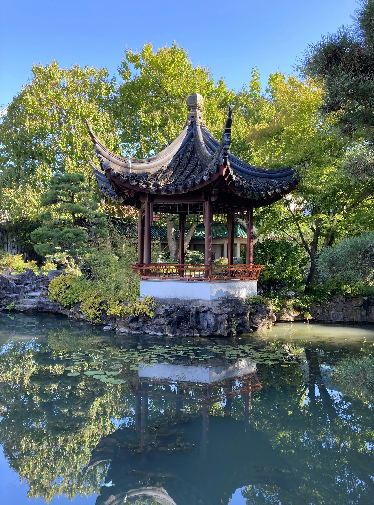
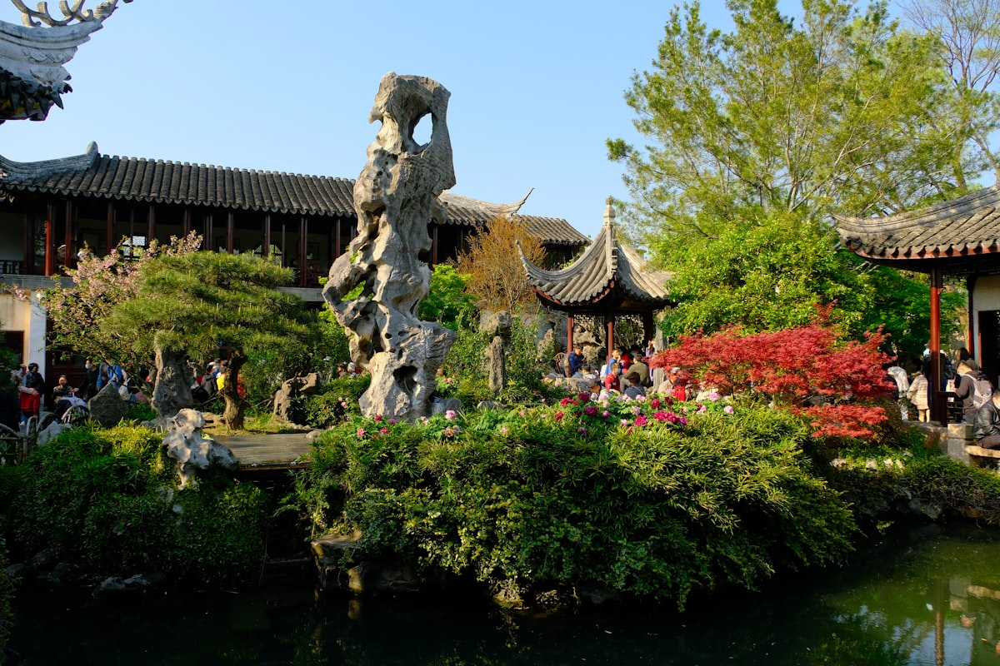
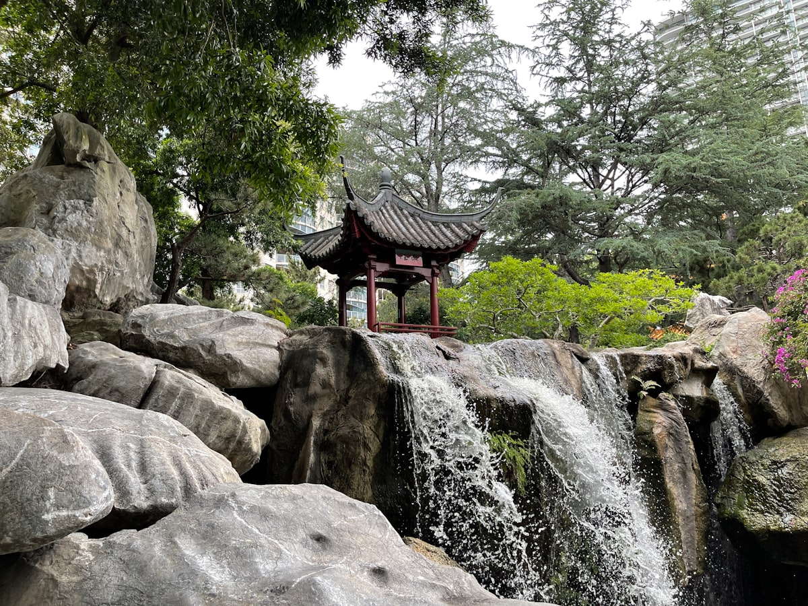
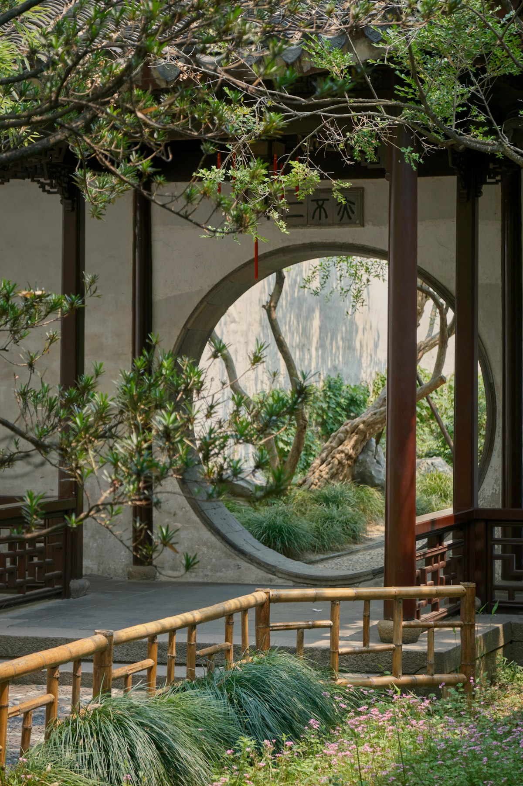

Classical Garden
Master of the Nets Garden
网师园
The epitome of the scholar's garden aesthetic
History
Originally built in 1140, rebuilt in 1770. Despite being one of the smallest classical gardens, it is considered the most refined example of residential garden design.
Design Philosophy
The garden embodies the scholar's ideal of cultured retirement. Every element serves contemplation—from the placement of a single rock to the reflection of moonlight on water.

Main Residence
The residential quarters showcase refined literati taste through understated elegance. Furniture, paintings, and decorative objects create an atmosphere of cultured simplicity.

Central Pond
Though modest in size, the pond creates a sense of expansiveness through strategic viewing angles. Pavilions positioned at key points maximize scenic variety.

Moon Viewing
The garden was designed with nocturnal appreciation in mind. The Pavilion for Watching the Moon demonstrates how architecture frames celestial beauty.